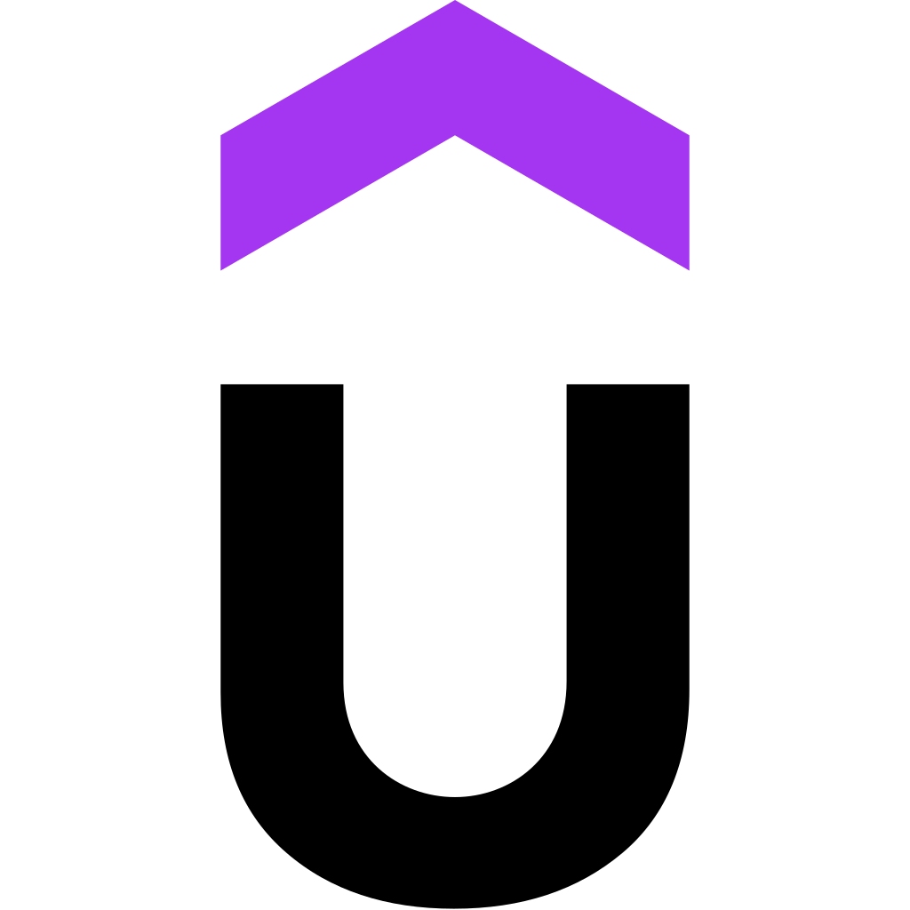

Certifications
AWS Machine Learning
Issued by Coursera (2023)

Full Stack Web Development
Issued by Udemy (2022)
Python Programming
Issued by Besant Technologies
Excel Using AI Workshop
Issued by Office Master
I’m a passionate web developer with hands-on experience in
HTML, CSS, and JavaScript, building responsive
and user-friendly websites. I’m currently expanding my skill set by learning
Python, Java, and strengthening my knowledge
in MS Excel and MySQL for data handling
and backend basics.
I enjoy turning ideas into real-world projects and constantly challenge
myself to learn new technologies. My goal is to create clean, minimal,
and modern web experiences that are both functional and visually appealing.
Sri Indu college of Engineering & Technology
2019-2023
SR Junior College
2017-2019
Telangana State Model School
2016-2017
Technologies: Python, Machine Learning, ANN, Pandas, NumPy, TensorFlow
Built a fake profile detection system for online social networks using Artificial Neural Networks. Implemented data preprocessing, model training, and performance evaluation using Python ML libraries. Achieved classification of profiles as genuine or fake based on learned patterns.
Duration: Final year B.Tech Major Project (2023)
Technologies: HTML, CSS, Java/JSP/Servlets, MySQL, Apache Tomcat, Eclipse
Developed an Online Advertising System to enable organisations to publish and manage advertisements digitally, replacing traditional roadside advertising. The system supports targeted ads, user management, and secure authentication, improving reach and engagement. Learned concepts like SDLC, authentications, and software testing.
Duration: Final year B.Tech Minor Project (2022)
Issued by Coursera (2023)
Issued by Udemy (2022)
Issued by Besant Technologies
Issued by Office Master